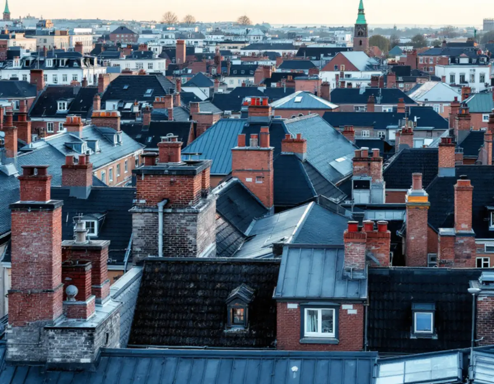
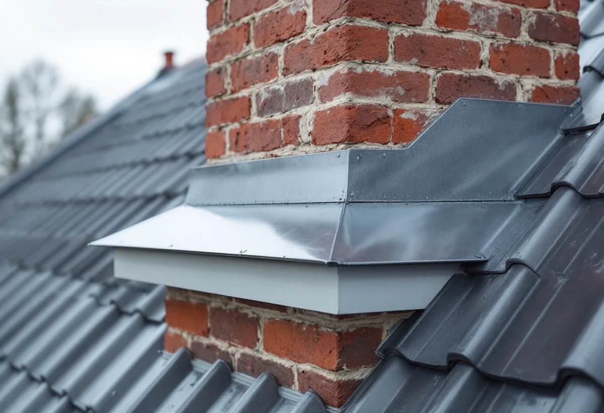
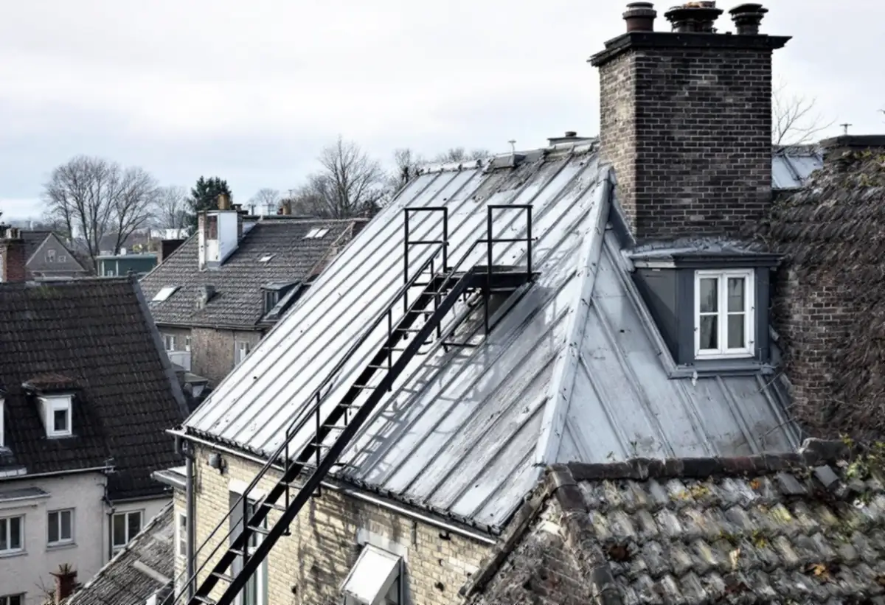

Takbyte på Södermalm
Byte av tegel-, betong- och plåttak.
Takbyte på Södermalm →Södermalm är till största delen flerbostadshus, och bakom nästan varje takbeställning står en förening eller en hyresvärd. Vi är takläggare på Södermalm för omläggning av plåttak, skorstensbeslag, takavvattning och takarbeten som ska stämmas av mot husets kulturvärden.

Enligt stadens områdesfakta fanns 77 525 bostäder i Södermalms stadsdelsområde 2025. 43 680 var bostadsrätter, 23 361 hyresrätter hos privata värdar och 10 471 hyresrätter i allmännyttan. Småhusen var 211 till antalet. Här beställs alltså takarbeten av styrelser och förvaltare, och arbetet planeras ofta ihop med andra underhållsåtgärder i huset.
Södermalm hör enligt stadens riksintressebeskrivning till den klassiska stenstaden från 1870–1930. Där betonas den enhetliga höjdskalan, de sammanbyggda gatufasaderna och de sluttande, oftast plåttäckta taken. Texten säger samtidigt att hus från saneringsåren 1950–1980 och kvarter där stenstaden aldrig byggdes färdigt kan ändras friare. Vilket som gäller avgörs hus för hus.
Det som skiljer ett stenhustak från ett villatak är ofta antalet genomföringar. Där skorstenar, ventilationshuvar och takluckor står tätt är det vid varje genomföring som plåtarbetet avgör om taket håller tätt. Vi går därför igenom alla anslutningar från vinden och från taket innan vi föreslår en åtgärd.
Södermalm är också kuperat. Kvarter på höjderna och längs branterna har tak som syns på långt håll, och gårdarna kan ligga på andra nivåer än gatan. Det påverkar hur ställning och materialhissar kan placeras och hur arbetet delas upp. Vi går igenom etableringen på plats med förvaltaren innan arbetet planeras in.
Oavsett om du behöver ett komplett takbyte eller en riktad renovering ger vi en tydlig bedömning och offert. Vi arbetar även i grannområden – se alla områden vi arbetar i.

Stockholms stad skriver att det krävs anmälan och startbesked för att installera eldstad, skorsten eller rökkanal. Det gäller också när en spisinsats byts så att eldningsförhållandena ändras, när en tyngre eldstad kräver förstärkning av bärande delar och när en ny eldstad ansluts till en befintlig rökkanal med ny håltagning. En ny utvändig skorsten kan dessutom kräva bygglov och ska redovisas på fasadritningar.
Staden råder fastighetsägare att tidigt rådgöra med skorstensfejarmästaren om både eldstad och skorstenens utformning och placering. För oss betyder det att skorstensbeslaget, takgenomföringen och eventuella stegar och gångbryggor planeras ihop med sotarens krav innan plåten läggs.
Alla ändringar ska göras varsamt, och på ett särskilt kulturhistoriskt värdefullt hus får åtgärden inte förvanska byggnadens karaktär. Staden skriver att en detaljplan kan innehålla bestämmelser om utökad lovplikt, så att lov krävs även för underhållsåtgärder som annars är lovfria.
Inför arbetet kan det behövas en antikvarisk förundersökning och en konsekvensbeskrivning, och ibland ska en certifierad sakkunnig inom kulturvärden kopplas in. Vi lägger in den tiden i planeringen, så att föreningen inte står med en ställning uppe medan underlaget tas fram.

Med drygt 33 000 hyresrätter och nästan 44 000 bostadsrätter i stadsdelsområdet har Södermalm två sorters beställare. Hos en hyresvärd är det förvaltaren som tar beslutet, i en förening styrelsen och ibland stämman. Vi anpassar underlaget efter det – med foton, en beskrivning av skicket och ett kostnadsförslag uppdelat på de delar som kan beslutas var för sig.
Alla tak på Södermalm är inte branta stenstadstak. Gårdshus, påbyggnader och senare tillägg har ibland flacka eller låglutande tak täckta med papp eller plåt. Boverket skriver att låglutande tak ofta drabbas av läckage, vilket kan leda till fuktskador och dålig inomhusmiljö.
På ett lågt tak rinner vattnet långsamt, och det samlas vid brunnar, skarvar och anslutningar mot högre väggar. Vi kontrollerar fall, brunnar och uppvik mot väggar och föreslår om taket kan lagas eller behöver ett nytt tätskikt. Det är ofta billigare att åtgärda ett lågt tak samtidigt som huvudtaket, eftersom ställning och etablering redan finns på plats.
Byte av tegel-, betong- och plåttak.
Takbyte på Södermalm →Riktade åtgärder som förlänger takets liv.
Takrenovering på Södermalm →Bedömning av skick inför beslut.
Takbesiktning på Södermalm →Nytt ytskydd på plåttak.
Takmålning på Södermalm →Skonsam tvätt och mossbehandling.
Taktvätt på Södermalm →Nytt plåttak och plåtarbeten.
Plåttak på Södermalm →Vi utgår från Bromma och tar takuppdrag på hela Södermalm, från Hornstull till Danvikstull. Förvaltaren eller styrelsen får en skriftlig bedömning, foton och ett kostnadsförslag som visar vad som ingår. Behöver huset en antikvarisk förundersökning eller ett bygglov tar vi med det i tidplanen från början.
Läs mer om tak på villa eller jämför takbyte och takrenovering innan du bestämmer dig.
Vi arbetar även på Kungsholmen.
Takläggare på Kungsholmen →Vi arbetar även på Östermalm.
Takläggare på Östermalm →Vi arbetar även i Hägersten.
Takläggare i Hägersten →Vi arbetar även i Enskede.
Takläggare i Enskede →